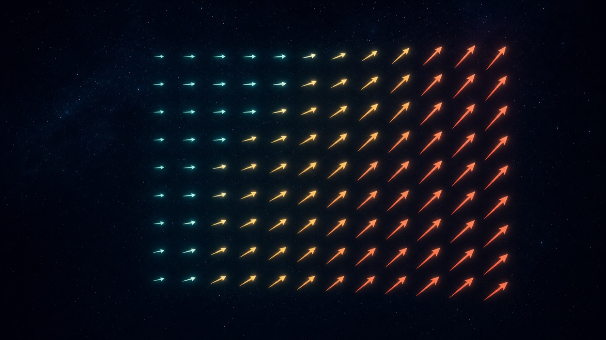
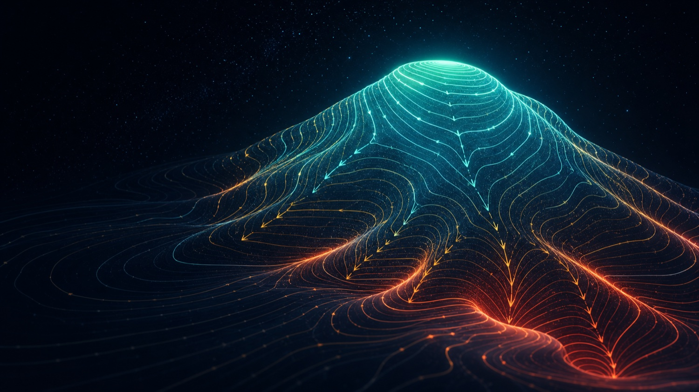
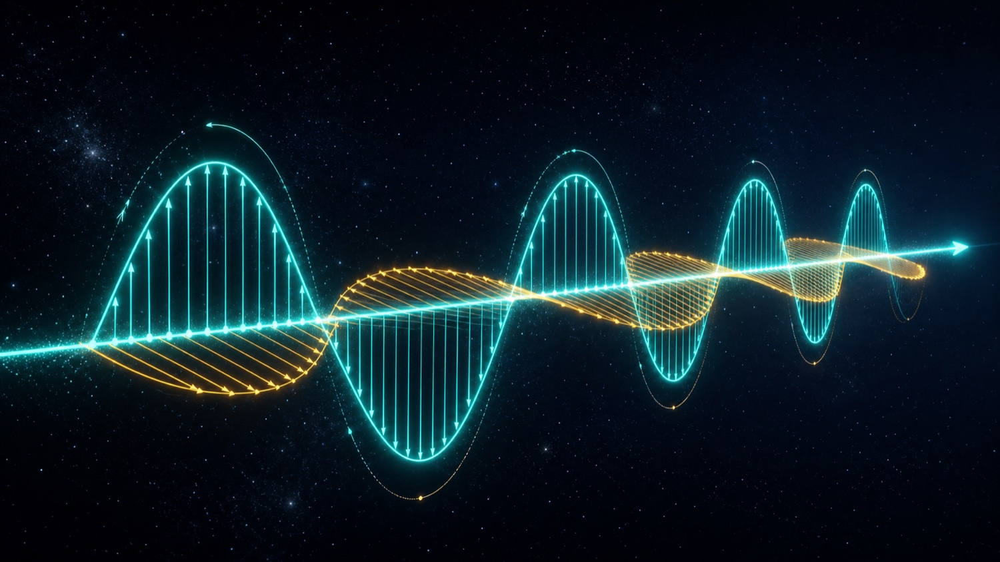
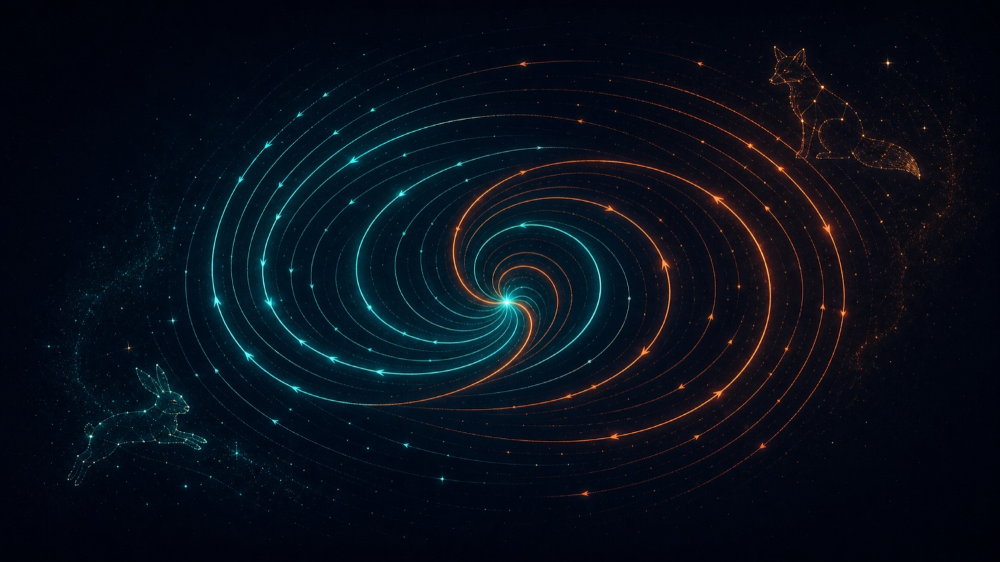

Le décor
Le champ
Une flèche par point de l'espace. Vitesse d'un fluide, force de gravité, champ magnétique : le même dessin pour des mondes différents.
→Atlas des écoulements · Dossier VII
Posez une flèche sur chaque point de l'espace, puis imaginez que c'est un fluide : le gradient, la divergence et le rotationnel deviennent visibles — jusqu'à faire parler les équations de Maxwell.
Tout commence par un geste minuscule : associer à chaque point une flèche. Tout finit par la lumière.
Ce dossier porte en français l'épisode de 3Blue1Brown (Grant Sanderson) sur la divergence et le rotationnel — « le langage des équations de Maxwell, de l'écoulement des fluides, et bien plus ». On part du plus simple — dessiner des flèches — pour atteindre deux opérations qui décrivent aussi bien l'eau qui coule, un champ électrique, ou la danse d'une population de renards et de lapins. Chaque idée est doublée d'un atelier que l'on manipule.
Une flèche par point de l'espace. Vitesse d'un fluide, force de gravité, champ magnétique : le même dessin pour des mondes différents.
→En chaque point : le fluide imaginé sort-il (source) ou entre-t-il (puits) ? Un seul nombre, une dérivée du flux.
∇·Lâchez une brindille : tourne-t-elle ? La rotation locale du flux, encore un nombre, à lire avec son signe.
∇×
Une flèche par point · la couleur code la longueurUn champ de vecteurs, c'est ce qu'on obtient en associant à chaque point de l'espace un vecteur — une longueur et une direction. Ces flèches peuvent représenter la vitesse des particules d'un fluide en chaque point, la force de gravité à différents endroits, ou l'intensité d'un champ magnétique.
« Pour l'essentiel, un champ de vecteurs, c'est ce qu'on obtient en associant à chaque point de l'espace un vecteur — une grandeur et une direction. »
3Blue1Brown — Divergence & rotationnel
Petite note de dessin. Si l'on traçait toutes les flèches à l'échelle, les plus longues encombreraient tout. On triche donc un peu : on raccourcit artificiellement celles qui débordent, en confiant souvent à la couleur le soin de redonner une vague idée de la longueur. (C'est exactement la convention du hero ci-dessus, et de l'atelier plus bas.)
Deux simplifications pour ce dossier. Les champs réels changent dans le temps — le vent vient par rafales, un champ électrique bouge avec ses charges — mais nous regarderons des champs statiques, comme un régime permanent. Et bien qu'un vecteur puisse vivre en 3D ou plus, nous resterons en deux dimensions.

Le gradient · la descente d'une colline de potentielOn comprend souvent bien mieux un champ qui décrit un phénomène en imaginant qu'il en décrit un autre. Et si ces vecteurs de force gravitationnelle définissaient plutôt un écoulement ? À quoi ressemblerait-il, et que nous apprendrait-il en retour sur la gravité de départ ?
« Et si les vecteurs qui définissent un écoulement décrivaient la direction de descente d'une certaine colline ? Une telle colline existe-t-elle seulement ? »
3Blue1Brown — Divergence & rotationnel
Cette question-là, c'est le gradient, vu par l'envers. Le gradient d'une « colline » — un champ scalaire : une altitude, une température, un potentiel — est le champ de vecteurs qui pointe partout vers la plus forte montée ; son opposé dévale la pente. Demander « ce flux est-il la descente d'une colline ? », c'est demander s'il dérive d'un potentiel. Quand la réponse est oui, le champ est un gradient, et l'on sait déjà énormément de lui.
Le gradient d'un champ scalaire (altitude, température, potentiel) est le vecteur qui pointe vers la plus forte montée ; son opposé dévale la pente. Un écoulement « dérive d'un potentiel » quand il s'écrit — il est alors la descente d'une colline.
La divergence et le rotationnel se ressentent « dans le ventre » quand on pense écoulement — même si le champ décrit en vérité un champ électrique. Le gradient, lui, se ressent quand on pense relief. Un seul objet mathématique, éclairé sous deux lampes différentes.
Autour de certains points, le fluide jaillit du néant, comme s'il y avait là une source. Autour d'autres, il disparaît dans le néant : ce sont des puits.
« La divergence d'un champ en un point donné te dit à quel point ce fluide imaginé tend à sortir des petites régions voisines, ou à y entrer. »
3Blue1Brown — Divergence & rotationnel
Sur une source, la divergence est positive. Et il n'est pas nécessaire que tout le fluide s'écarte : il suffit que le flux qui arrive d'un côté soit plus lent que celui qui repart de l'autre — cela trahit encore une génération spontanée. Inversement, si une petite région reçoit plus qu'elle ne laisse partir, la divergence y est négative.
La première écriture se calcule ; la seconde dit ce que ça veut dire : le flux net qui traverse le bord d'une petite région, divisé par son aire, quand cette région se réduit à un point. = source, = puits, = incompressible.
Le champ est une fonction qui prend une entrée 2D et rend une sortie 2D. Sa divergence, elle, est une nouvelle fonction : elle prend un point et rend un simple nombre, dépendant du comportement du champ dans un petit voisinage. En cela, c'est l'analogue d'une dérivée — la mesure de « combien » ce point agit en source ou en puits. (On retarde volontairement les calculs : comprendre ce que ça représente compte davantage.)
Pour un vrai fluide comme l'eau — et non le fluide imaginé qui sert à illustrer —, s'il est incompressible, son champ de vitesse doit avoir une divergence nulle en tout point. C'est une contrainte forte sur les champs capables de résoudre un vrai problème d'écoulement.
Imaginez lâcher une brindille dans le fluide, en fixant son centre : tournerait-elle ? Là où la rotation est horaire, le rotationnel est dit positif ; là où elle est antihoraire, négatif.
« Autrement dit : si tu lâchais une brindille dans le fluide à ce point, en fixant son centre, tendrait-elle à tourner ? »
3Blue1Brown — Divergence & rotationnel
Pas besoin que toutes les flèches tournent dans le même sens. Un point au cœur d'une zone de cisaillement — flux lent en bas, rapide en haut — a un rotationnel non nul : il en résulte une influence horaire nette.
Le rotationnel « propre » associe à chaque point de l'espace 3D un nouveau vecteur, selon une règle de la main droite. Ici, pour aller à l'essentiel, on n'utilise que sa variante 2D, qui associe à chaque point un simple nombre plutôt qu'un vecteur.
La variante 2D (en haut) rend un simple nombre — le sens de rotation. Le vrai rotationnel (en bas) associe à chaque point de l'espace 3D un vecteur, selon la règle de la main droite : son axe est celui de la rotation, sa longueur l'intensité.
3Blue1Brown appelle positif le sens horaire, car l'axe vertical est inversé à l'écran. La convention mathématique usuelle (axe y vers le haut) appelle positif le sens antihoraire. Même physique, signe opposé : vérifiez toujours l'orientation avant de conclure. Nos ateliers suivent la convention mathématique.
Choisissez un champ, regardez les particules s'écouler et lisez sa divergence et son rotationnel en direct. La brindille au centre tourne au rythme du rotationnel ; l'anneau respire au rythme de la divergence. (Convention mathématique : y vers le haut, antihoraire positif.)

E ⊥ B · le va-et-vient qui engendre la lumièreL'exemple maître : l'électricité et le magnétisme tiennent en quatre équations — les équations de Maxwell — écrites dans le langage de la divergence et du rotationnel.
Loi de Gauss. La divergence du champ électrique en un point est proportionnelle à la densité de charge qui s'y trouve. Lisez-la en fluide : les régions chargées positivement sont des sources, les régions négatives des puits, et là où il n'y a pas de charge, le fluide s'écoule de façon incompressible, comme l'eau.
En haut, les deux divergences : proportionnelle à la densité de charge (Gauss — charges = sources/puits), et (pas de monopôle magnétique : ni source ni puits). En bas, les deux rotationnels : Faraday et Ampère-Maxwell disent que la variation de chaque champ dépend du rotationnel de l'autre — ce va-et-vient est exactement ce qui engendre la lumière.
Divergence du champ magnétique : zéro partout. Le fluide correspondant est incompressible — ni source, ni puits. Autrement dit, les monopôles magnétiques — un pôle nord ou sud isolé — n'existent pas : rien d'analogue aux charges positives et négatives de l'électricité.
« Bien sûr, il n'existe pas de fluide électrique au sens propre — mais c'est une façon très utile, et très belle, de lire une équation comme celle-ci. »
3Blue1Brown — Divergence & rotationnel
Enfin, les deux dernières équations disent que la façon dont l'un des champs change dépend du rotationnel de l'autre. C'est une idée purement tridimensionnelle ; mais voici le point : ce va-et-vient entre les deux équations est précisément ce qui donne naissance aux ondes lumineuses.
Il n'y a pas de « fluide électrique » réel. Le modèle source/puits est une image, choisie parce qu'elle rend l'équation lisible et juste. Savoir distinguer la métaphore du fait — et dire laquelle est laquelle — c'est tout l'art de bien vulgariser sans tromper.

Espace des phases · renards contre lapinsExemple classique en équations différentielles : suivre la taille de deux populations, dont l'une est le prédateur de l'autre. L'état du système à un instant — les deux effectifs — est un point d'un plan : son espace des phases. À chaque couple d'effectifs on associe un vecteur, qui dit comment, et à quelle vitesse, ils tendent à changer.
« Des opérations comme la divergence et le rotationnel peuvent te renseigner sur le système. Les effectifs convergent-ils vers un couple de valeurs, ou y a-t-il des valeurs dont ils s'écartent ? »
3Blue1Brown — Divergence & rotationnel
Avec les proies (lapins) et les prédateurs (renards), ce système associe à chaque état le vecteur : c'est exactement le champ de vecteurs de l'écran. Son flot tourne en boucles fermées autour de l'équilibre — les cycles proie-prédateur.
Beaucoup de renards et peu de lapins ? Les renards déclinent (faute de proies), les lapins aussi (mangés plus vite qu'ils ne se reproduisent). Le champ n'est plus dans l'espace physique : c'est la représentation d'un système dynamique.
L'écoulement associé s'appelle le flot de phase. Ici, il tourne en boucles fermées autour d'un équilibre : des cycles proie-prédateur. D'un coup d'œil, on voit comment une foule d'états initiaux évolueraient — et l'on devine pourquoi les mathématiciens tiennent tant aux dimensions supérieures.
On écrit la divergence comme un produit scalaire entre ce triangle renversé ∇ et le champ, et le rotationnel comme un produit vectoriel. On dit parfois que c'est un simple tour de notation. C'est plus que ça : il existe un vrai lien entre divergence et produit scalaire, et entre rotationnel et produit vectoriel.
Faites un petit pas d'un point à un autre. Le vecteur au nouveau point diffère un peu : cette différence de la fonction sur de petits pas, c'est tout le calcul différentiel.
Le produit scalaire mesure à quel point deux vecteurs sont alignés. Le produit scalaire de votre pas par la différence qu'il provoque tend à être positif là où la divergence l'est : un pas qui provoque un changement dans la même direction, c'est un flux sortant.
« La divergence est une sorte de valeur moyenne de ce produit scalaire — un pas, multiplié par le changement qu'il provoque — sur toutes les directions de pas possibles. »
3Blue1Brown — Divergence & rotationnel
De même, le produit vectoriel mesure à quel point deux vecteurs sont perpendiculaires. Le produit vectoriel du pas par la différence qu'il provoque tend à être positif là où le rotationnel l'est : un pas qui provoque un changement perpendiculaire, c'est une tendance à la rotation.
Le nabla est un vecteur d'opérateurs de dérivation. Le produit scalaire mesure l'alignement () — un pas aligné avec le changement qu'il provoque, c'est de la divergence ; le produit vectoriel mesure la perpendicularité () — un changement perpendiculaire, c'est de la rotation. La notation n'est donc pas qu'un truc mnémotechnique.
Ces ateliers sont un aperçu. L'application de Samlepirate pousse l'idée jusqu'aux 130 000 particules en WebGPU et aux équations de Maxwell résolues en direct (FDTD).
« Juste toi et moi, partageant un amour des maths, sans autre motif. »
3Blue1Brown referme l'épisode sur ce vœu : des vidéos faites pour la valeur qu'on y trouve, pas pour ce qu'elles vendent. Ce dossier prolonge cet esprit — on ne vous demande pas d'y croire, on vous le montre, et on vous laisse manipuler. Le réel est déjà bien assez vertigineux.

Archives publiques du collectif : des transcriptions de lives devenues pages immersives, où la science répond, fait par fait, aux récits de l'intox. Ce dossier rejoint les autres au catalogue.
Veritas omnia vincit · Ad astra per aspera.
Empire contre Intox — Dossier Samlepirate · Champs de vecteurs, divergence & rotationnel · d'après 3Blue1Brown